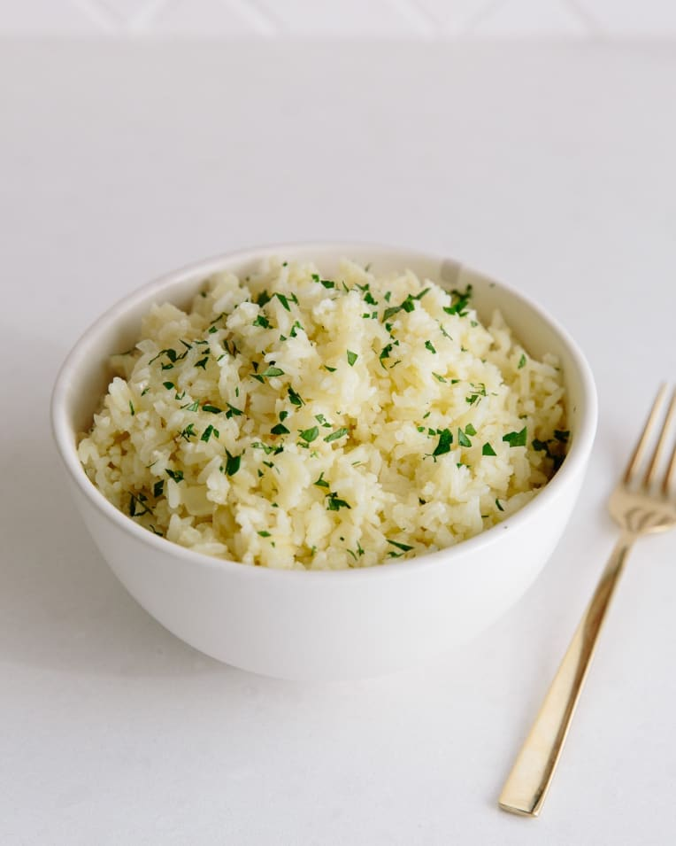

Home
Rice Pilaf

Description
Think of rice pilaf as an upgrade to your everyday rice. It’s like rice that puts on a nice dress and some earrings — not much extra work, but the payoff is a side dish that feels just a little bit fancy. Today we’re making the very simplest rice pilaf: white rice cooked with a little flavorful oil and chopped onion, and then simmered with broth. It’s one step up from rice cooked in water, but not so elaborate that you can’t pull it together on a weeknight.
Pilafs can also run the gamut from this super-simple version to more complex (and flavorful) side dishes. You can make pilafs that mix other grains and pastas along with the white rice, like wild rice, orzo, broken pieces of vermicelli, and tiny lentils. Along with the onion, you can mix in peas, diced carrots, chopped peppers, or sautéed mushrooms, or even sweet-savory ingredients like golden raisins, dried currants, chopped dried apricots, or nuts. Spice it up with a pinch of saffron, some spices, or even a strip of orange zest. These additions give the pilaf a medley of both textures and flavors, and make it an easy side dish to customize for any table.
Ingredients
- 1 cup long-grain white rice
- 1 tablespoon extra-virgin olive oil or butter
- 1/2 medium yellow onion, diced
- 1/2 teaspoon fine salt
- 1 3/4 cups chicken broth, vegetable broth, water, or a mix of water and broth
Steps
- Rinse the rice: Place the rice in a strainer and rinse it thoroughly under cool water. The water running through the rice will look milky at first, but will then become clearer and only lightly clouded. It's fine if there's still some haze in the water. There is no need to dry the rice before cooking; a bit of moisture on the rice is fine. Set the strainer of rice aside while you cook the onion.
- Cook the onion: Warm the olive oil or butter in the saucepan over medium heat. Add the onion and cook until the onion is translucent and soft.
- Toast the rice: Add the rice to the pan and stir to coat with olive oil or butter. Continue to cook, stirring often, until the tips of the rice turn translucent and the rice smells fragrant and toasted.
- Add the broth or water and boil: Pour the broth or water and salt into the saucepan and increase the heat to medium-high. Bring to a boil.
- Cover and cook: As soon as the water comes to a boil, reduce the heat to low and cover the pot. Cook without lifting the lid for 15 to 18 minutes. At the end, check that the rice is tender and has absorbed all the liquid. If not, cover and cook another few minutes, adding a few tablespoons of water if needed.
- Steam the rice: Remove the pan from heat and let it sit, covered, for another 5 to 10 minutes.
- Fluff and serve: